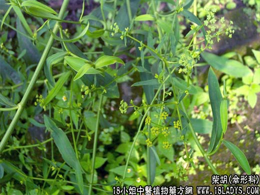

【中药概述】
柴胡为伞形科草本植物柴胡（北柴胡）的根。苦、辛，微寒。归心包、肝、胆、三焦经。
1．和解少阳：用于外感发热，或邪入半表半里的寒热往来及疟疾寒热等，如（<伤寒论>小柴胡汤）、（柴葛解肌汤）。
2．疏肝解郁：用于肝郁气滞，胁肋胀满疼痛，及肝郁血虚，月经不调等，如（<景岳全书>柴胡疏肝散）。
3．升阳举陷：用于中气不足，清阳下陷的脱肛、子宫下垂、胃下垂等，如（<脾胃论>补中益气汤）。
4．热入血室：妇女患外感发热期间遇到月经来潮，外邪传入血室，致寒热发作。如（<和剂局方>逍遥散）。
【药效鉴别】
柴胡先降而后升，宣气散结而开郁调经；作用于脾，有升提中焦阳气而举陷的功能，本品能入少阳而退热。
【药理作用】
对中枢神经系统具有明显的镇静、镇痛、解热、降温与镇咳作用。其抗炎强度与强的松龙相似。
【化学成分】
含a-菠菜甾醇、春福寿草醇、柴胡皂甙和挥发油及黄酮类物质。
【用量用法】
3——10g，水煎服。和解退热多生用。醋炒可增强其疏肝、止痛作用。
【使用注意】
凡气逆火升，肝阳上亢之耳鸣、头晕、头痛，均不宜。
【附】
醋柴胡：味苦，性微寒。归肝、胆经。醋炙能缓和升散之性，增强疏肝止痛作用，适用于肝郁气滞的胁痛、腹痛及月经不调。常与枳壳、香附、川芎等同用。
鳖血柴胡：苦，微寒。归肝、胆经。鳖血炙能抑制升浮之性，增强清肝退热、截疟功效。常与青蒿、地骨皮、白芍、石膏、知母等同用，增强表里退虚热作用。